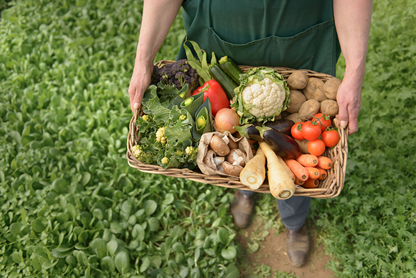

Nota de Tapa
Bueno y barato en la puerta de tu casa

Muchas veces optamos por un sanguchito por falta de tiempo, porque no compramos lo necesario para cocinar, porque justo nos falta un ingrediente o porque estamos agotados y en la alacena sólo nos mira un paquete de fideos… También nos pasa que decidimos comer sano y los precios nos lo impiden. Pues bien, esas excusas de por qué no comemos sano ya no tienen coherencia en los tiempos que corren.
Gracias a las nuevas tecnologías ahora podemos recibir en nuestro hogar –y sin pagar de más- alimentos saludables.
Hay quienes cuentan con el tan querido delivery sin costo, también los que te acercan las verduras y frutas a la puerta de tu casa, están aquellos que ofrecen el seguimiento de la cadena de comercialización para ver de dónde provienen los alimentos que consumimos y lo hagamos de forma responsable… de cualquier manera todas estas opciones se adaptan a nuestra comodidad.
Desde hace un año ofrecen alimentos elaborados, listos para comer o mandar al freezer. Los combos varían según las semanas o por temporadas. Todos sus productos son Aptos para Veganos.
-¿Cómo y por qué incursionaron en este rubro?
-Primero para demostrar que hay una manera más sana de alimentarse y después para generar un ampliación de la conciencia de que el ser vegetariano NO es solo vivir de ensaladas.
-¿Qué ofrecen en delivery?
-Tenemos hamburguesas y mayonesas veganas, panificados (panes, pizzas y empanadas) de harina integral, canelones y de a poco estamos incorporando productos dulces.
- Haciendo un pedido por mensaje privado de FB o por mail. Todos los Sábados estamos entregando por Capital Federal y los Martes vamos a zona Oeste. Dependiendo de la zona, en CABA el envío es sin cargo.
Ejemplo de Costo:
En agosto uno de los combos incluía: 4 hamburguesas de quinoa, 4 de yamaní, 4 de mijo y 4 de lentejas por 150 pesos.
Desde su página web promueven bolsones de verduras y frutas a precios accesibles. Muchas veces los precios son hasta 4 veces menores que los de las verdulerías.
¿Qué ofrecen en delivery?
-3 tamaños de Canastas que contienen un mix de frutas y verduras de estación.
¿De dónde provienen los productos?
-Vamos TODAS las noches a comprar al Mercado Central. Allí se encuentran puestos de productores de todo el país, con frutas y verduras que muchas veces ni se ven en las verdulerías de barrio por no ser tan "comerciales".
-¿Cómo se pueden adquirir los bolsones?
-Los pedidos se hacen desde la web: www.labaratadelcentral.com.ar. También tienen su lugar de trabajo abierto al público en pleno Palermo.
Ejemplo de Costo:
Canasta 1 $87, la 2 $145 y la 3 $189. Por el envío en Capital cobran un plus según el barrio. La primera canasta puede incluir: Zapallo Cabutia1/2 u, Tomate300 gr., Cebolla 300 gr., Peras350 gr., Banana 400 gr., Espinaca1 at, Zanahoria.400 gr., Papa 600 gr., Brócoli chico1 u., Mandarina400 gr., Zapallito Verde400 gr., Lechuga 1 u., Frutillas200 gr., Limón2 u., Remolacha500 gr.
*(las cantidades y productos pueden variar semana a semana)Todos sus productos son Veganos. Tienen una pastelería deliciosa y hacen también catering. Entregan en Tribunales, Palermo, Colegiales, Constitución y más barrios.
-¿Qué pueden incluir en el delivery?
-Desde Desayunos, comidas, panificados, leches vegetales y pastelería.
-¿Cómo contactarse para hacer pedidos?
-Hay que hacerlos con una anticipación de 3 días. Se pueden realizar mediante fb o mail a janetmarisol@gmail.com.
Ejemplo de Costo:
Torta Brownie de albarroba y chocolate, rellena de crema, marroc, castañas de cajú, almendras y nueces, Precio: $260
MERCADO CENTRAL
www.mercadocentral.gob.ar Desde la pagina web pueden ver los horarios y toda la información para saber como llegar. También difunde un listado mensual de productos frutihorticolas sugeridos que ya sea por factores de estacionalidad o grandes volúmenes de producción, se encuentran a buenos precios en cada periodo del año.
Dicen que hay que llegar a la medianoche para elegir la mercadería en el momento en que llegan los camiones de las quintas. Así se escoge la verdura fresca, recién cosechada… “y que no te vendan cajones de ayer”, dicen los de La Barata que empezaron en diciembre de 2011 yendo a comprar cantidades al Mercado Central y luego distribuyéndolas entre los compradores. “Estamos convencidos (y lo vivimos en carne propia) que el bajo porcentaje de consumo de frutas y verduras en el país es en gran parte debido a dos factores: comodidad y precio”, dicen.
Colectivo Solidario
Ofrecen de todo sobre la base de la economía solidaria. Todos sus productos provienen de cooperativas de distintas partes del país. Se eligen en un listado y tienen un costo según la zona de entrega.
-¿Qué productos hay?
-Verduras, cervezas, fideos, dulces, especias, productos de perfumería y limpieza, yerbas y muchos más.
-¿Cómo se hacen los pedidos?
-Vía web, entrando a www.colectivosolidario.org y seleccionando las cantidades y los productos. Una vez por semana se hacen las entregas.
Costo:
En agosto se podían adquirir 1 kg de mozzarella por $55, harina de algarroba por 250gr a $8, desodorante para pisos por 1lt $17, aceite de oliva extra virgen por $31.
Sintonía Veg
-¿Qué ofrecen?
-Hay milanesas, bastoncitos de tofu, hamburguesas, boios, empanaditas, canelones y mucho más.
-¿Cómo se pueden adquirir?
-Los pedidos se toman con una semana de anticipación y se entregan los sábados de 9 a 15hs. Se hacen envíos a todo CABA por 25 pesos y algunos lugares de GBA, sino pueden retirarse por Coghlan.
Se pueden contactar vía mail a info@sintoniaveg.com.ar o al 15-3696-6004
Ofrecen lo que llaman “viandas salvadoras” para vegetarianos. Hay ofertas y promos todas las semanas y los productos se entregan freezados.
Ejemplo de Costo: Bastoncitos veganos de Tofu por 12 $60. Sambusak (empanaditas con masa casera, semillas de sésamo rellenas con huevo y queso sin cuajo bovino) por 12 unidades $60.
Estos son sólo algunos ejemplos de que es posible comer sano sin pagar de más… lo que resta es tomar la decisión!